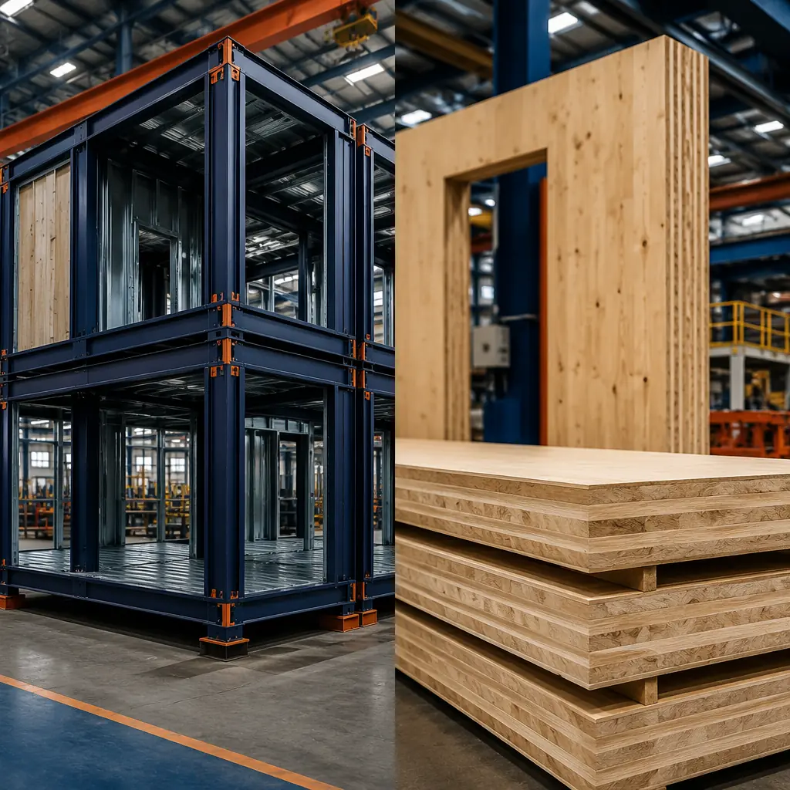
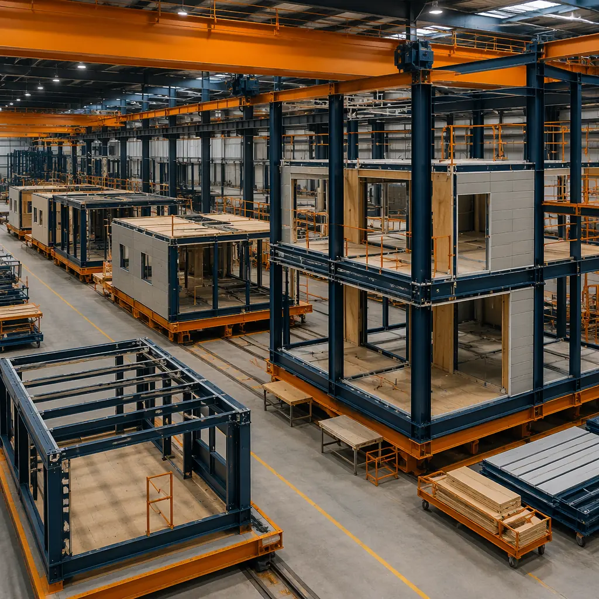
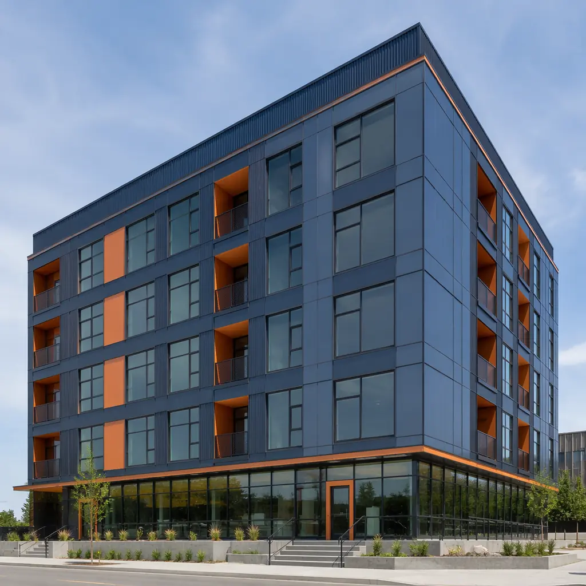

Cross-laminated timber (CLT) has captured the architectural imagination — and a growing share of mid-rise construction — as the mass timber movement expands beyond Europe into North America and Asia-Pacific. The global CLT market reached $1.8 billion in 2025, growing at 13.4% CAGR, driven by sustainability mandates and biophilic design preferences. But for developers evaluating structural systems, CLT is one option among many — and modular steel-frame construction offers distinct advantages in speed, fire safety, acoustic performance, and multi-story capability that mass timber cannot yet match. This comparison examines nine dimensions where these two factory-based construction methods diverge in ways that directly affect project feasibility, financing, and long-term asset value.

1. Structural System: Steel Frame vs Mass Timber Panel
The fundamental structural difference between modular steel and CLT construction is how loads are carried through the building. Modular steel construction uses a hot-rolled or cold-formed steel frame — typically HSS columns and wide-flange beams — that forms a three-dimensional structural cage within each module. When modules are stacked and connected on site, the steel frames create a continuous load path from roof to foundation, capable of supporting 6-20 stories without a secondary structural system. MODURA's standard module is engineered for 250 psf live load and 80 psf dead load, exceeding IBC requirements for residential and commercial occupancies.
CLT construction relies on engineered wood panels — typically 3, 5, or 7 layers of dimensional lumber cross-laminated with structural adhesive under hydraulic pressure — that function as both the structural wall and floor diaphragm. A 7-ply CLT panel is approximately 9.5 inches thick and carries vertical loads through bearing walls, not a steel frame. This bearing-wall structural logic limits CLT buildings to approximately 8-12 stories in current practice (the 18-story Mjøstårnet in Norway uses glulam columns and beams, not pure CLT panel construction). For developers targeting 12-20 story multi-family projects — increasingly common in urban infill markets — modular steel's frame-based load path provides headroom that CLT's bearing-wall approach does not. As documented in our comparison of modular versus traditional construction, steel's strength-to-weight ratio enables taller buildings with smaller column cross-sections, maximizing net rentable square footage per floor plate.
2. Construction Speed: Parallel Production Advantage
Both modular steel and CLT are factory-based methods that accelerate construction relative to site-built alternatives. But the acceleration mechanisms differ — and the difference matters for project financing.
| Construction Phase | Modular Steel Frame | CLT Mass Timber |
|---|---|---|
| Factory production | 6-10 weeks (MEP pre-integrated) | 4-8 weeks (panels only, no MEP) |
| On-site assembly | 1-2 weeks per floor (modules craned into place) | 2-3 weeks per floor (panels erected and connected) |
| MEP installation | 90% factory-complete, 10% site connection | 100% on-site (panels are structural only) |
| Weather enclosure | Module envelope applied in factory | Weather barrier applied on site after erection |
| Total: 6-story, 50,000 sq ft | 18-24 weeks | 26-34 weeks |
The critical distinction is MEP integration. Modular steel modules arrive with HVAC ductwork, plumbing risers, electrical conduit, and low-voltage pathways pre-installed and pre-tested at the factory. CLT panels arrive as structural elements only — MEP trades must install all systems on site after the building is enclosed, adding 8-12 weeks to the post-erection schedule. For a developer carrying construction financing at 8-10%, the 8-10 week schedule advantage of modular steel translates to approximately $120,000-$180,000 in reduced interest carry on a $20 million project. Our modular MEP systems integration guide details how factory pre-installation achieves 95%+ first-pass commissioning rates compared to 60-70% for field-installed MEP in CLT buildings.

3. Fire Safety: Non-Combustible Steel vs Combustible Timber
This is the dimension where the two systems diverge most dramatically — and where building code treatment directly affects insurance premiums and financing eligibility.
Steel is non-combustible. A modular steel building achieves its fire rating through passive protection: intumescent paint on columns (2-hour rating at 3.5mm DFT), Type X gypsum board on walls (1-2 hour rating), and mineral wool insulation in cavities. The steel frame itself does not contribute fuel to a fire, and its structural capacity degrades predictably at a known rate (50% strength at 550°C) that structural engineers model precisely. As we documented in our guide to modular construction fire safety, steel-frame modules achieve 2-hour fire separation between units using tested assembly configurations that meet IBC and NFPA requirements without variance.
CLT is combustible — it is, fundamentally, wood. While mass timber chars predictably at a rate of approximately 0.65mm per minute (creating an insulating char layer that protects the unburned wood core), this char calculation must be incorporated into the structural design. A 7-ply CLT panel must be oversized by 20-30mm to account for sacrificial char depth during a 2-hour fire exposure, adding material cost and reducing net floor area. More critically for developers: many insurance underwriters apply a 15-40% premium surcharge to mass timber buildings above 4 stories, reflecting the actuarial reality that combustible structural systems carry higher total-loss risk in multi-family and hotel occupancies. For a 100-unit apartment building with annual property insurance of $180,000, that CLT surcharge adds $27,000-$72,000 per year to operating costs — a 15-40% increase that persists for the life of the asset.
4. Acoustic Performance: STC and IIC Ratings
Multi-family developers live and die by acoustic separation between units — it's the number-one source of tenant complaints and the hardest deficiency to fix after occupancy. Modular steel construction achieves STC 55+ between adjacent units through a combination of: double-layer 5/8" Type X gypsum board on resilient channels (decoupling the finish surface from the steel stud), 3.5" mineral wool batt insulation in wall cavities (NRC 0.95 at 500Hz), and a 1" air gap between module walls (the module-to-module connection detail that eliminates the flanking path that plagues continuous CLT wall panels). Impact isolation class (IIC) ratings of 52-55 are achieved through 8mm luxury vinyl plank flooring over 2mm acoustic underlayment on the factory-installed subfloor, with the steel floor diaphragm providing mass that CLT's lighter-weight assembly struggles to match.
CLT panels, as a monolithic structural element, transmit sound efficiently through the continuous wood medium. Achieving STC 50+ in a CLT building typically requires supplemental strategies: suspended ceilings with isolation clips, floating floors with 2" of gypsum concrete topping, and resilient channels on both sides of bearing walls — all of which are field-installed after panel erection, adding cost and schedule. A 2024 acoustic study by RWDI comparing identical floor plans in steel modular and CLT construction found that achieving STC 55 required an additional $8.20/sq ft in the CLT building versus $2.40/sq ft in the steel modular building — a $5.80/sq ft acoustic premium that partially offsets CLT's perceived material cost advantage. Our detailed analysis of modular building acoustics provides STC and IIC test data for each wall and floor assembly configuration.
5. Embodied Carbon: The Sustainability Paradox
CLT's primary marketing advantage — and the reason architects champion it — is embodied carbon. Wood sequesters approximately 1.8 kg of CO2 per kg of dry wood fiber, meaning a CLT building stores roughly 200-300 kg CO2 equivalent per square meter of floor area. A 50,000 sq ft CLT building stores approximately 900-1,400 metric tons of CO2 in its structural timber — a compelling number in sustainability presentations.
But the full lifecycle carbon picture is more nuanced. Steel modular construction achieves 30-50% lower whole-life carbon compared to traditional reinforced concrete construction (as documented in our embodied carbon analysis), primarily through: factory precision that reduces material waste from 15-20% (site-built) to 2-4% (factory-built); the steel industry's transition to electric arc furnace (EAF) production, which uses 90%+ recycled content and emits 0.4 kg CO2 per kg of steel (versus 2.2 kg for blast furnace steel); and the reduced construction duration cutting site energy consumption (generators, equipment, temporary heating) by 40-50%.
Furthermore, steel is infinitely recyclable without degradation — at end of life, a modular steel building's structural frame has positive scrap value (approximately $300-400 per metric ton). CLT panels, while theoretically recyclable into particleboard or biomass fuel, have no established end-of-life recovery market at scale. Most decommissioned CLT currently goes to landfill, where anaerobic decomposition releases the sequestered carbon as methane — a greenhouse gas 28x more potent than CO2. Developers pursuing net-zero commitments should evaluate both upfront embodied carbon (where CLT leads) and whole-life carbon including end-of-life (where steel's recyclability advantage partially closes the gap). Our net-zero modular building guide covers operational carbon strategies that apply to both structural systems.

6. Moisture Management During Construction
CLT's vulnerability to moisture during construction is a risk that developers in wet climates must price into their contingency budgets. CLT panels exposed to rain during on-site erection can absorb moisture that causes dimensional swelling (up to 2-3% across the grain), delamination at adhesive bond lines, and mold growth within enclosed wall cavities. A 2023 study of 12 CLT construction projects in the US Pacific Northwest found that 8 of 12 experienced moisture-related defects requiring remediation, with an average cost of $185,000 per project and an average schedule delay of 4.2 weeks. The remediation often involves removing and replacing affected panels — a far more invasive and costly process than drying out a steel frame.
Modular steel construction eliminates this risk entirely. Steel does not absorb moisture, does not support mold growth, and does not experience dimensional change with humidity variation. Modules arrive on site with the building envelope pre-installed — the module's interior is protected from weather throughout the construction process. This weather independence is especially valuable for projects in monsoon climates, coastal environments, and regions with short construction seasons. As we explore in our analysis of modular construction for coastal environments, steel-frame modules provide inherent moisture resilience that timber-based systems cannot match without extensive supplementary protection.
7. Cost Comparison: Per Square Foot Analysis
Comparing modular steel to CLT on a pure material-cost-per-square-foot basis is misleading because the two systems deliver different scopes of work. A meaningful comparison must account for MEP integration, acoustic treatment, fire protection, and moisture management — all of which are incremental costs in CLT that are baked into the modular steel module price.
For a representative 6-story, 50,000 sq ft multi-family building in a US urban market, the all-in construction costs (including structural system, MEP rough-in, fire protection, acoustic treatment, and interior finishes to drywall-ready stage) are approximately: modular steel frame at $195-245/sq ft; CLT at $210-270/sq ft. The $15-25/sq ft premium for CLT reflects the on-site MEP installation (modular steel includes it in the factory), the acoustic treatment adders, and the fire protection measures (sprinkler coverage density is 30-40% higher in combustible construction per NFPA 13). These ranges are based on 2025 RSMeans data adjusted for regional labor rates and exclude site work, foundation, and soft costs, which are comparable across systems.
For developers evaluating both options, our 2026 modular construction cost guide provides updated regional pricing data, and our modular construction ROI analysis models the impact of construction duration on project IRR across different structural systems.
Developer's Decision Framework
Neither modular steel nor CLT is universally superior — the right choice depends on project specifics:
- Choose modular steel frame when: project height exceeds 8 stories; construction schedule compression is critical (carrying costs above 8%); fire insurance premiums are a material operating expense; the site is in a wet climate with a limited construction season; or MEP complexity (healthcare, lab, data center) demands factory-quality installation.
- Choose CLT when: the project is 4-8 stories and height limits are not a constraint; biophilic design and exposed wood aesthetics are central to the marketing strategy; the local building code explicitly incentivizes mass timber (as Oregon and Washington state codes now do); or embodied carbon is the project's primary sustainability metric and end-of-life carbon is not modeled in the owner's ESG framework.
- Consider a hybrid approach: steel modular for the structural frame and MEP integration, with CLT used selectively for exposed ceiling areas in lobbies, amenity spaces, and penthouse units where the aesthetic value of exposed wood justifies the cost. Several European projects have successfully combined a modular steel primary structure with CLT floor panels, achieving the speed and height advantages of steel with the architectural warmth of timber.
MODURA's engineering team evaluates structural system options during the feasibility phase of every project, providing side-by-side cost models, construction schedules, and lifecycle analyses for steel modular, CLT, and hybrid approaches. The recommendation is always project-specific — driven by height, schedule, budget, and the owner's long-term asset strategy.